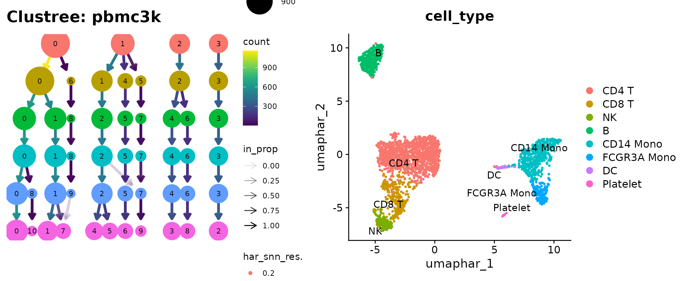
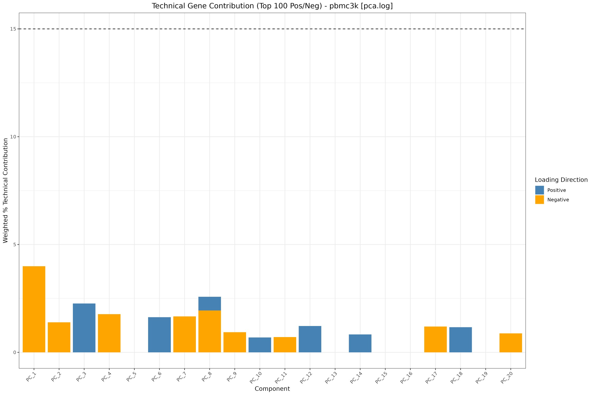
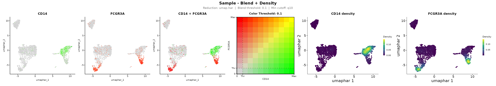
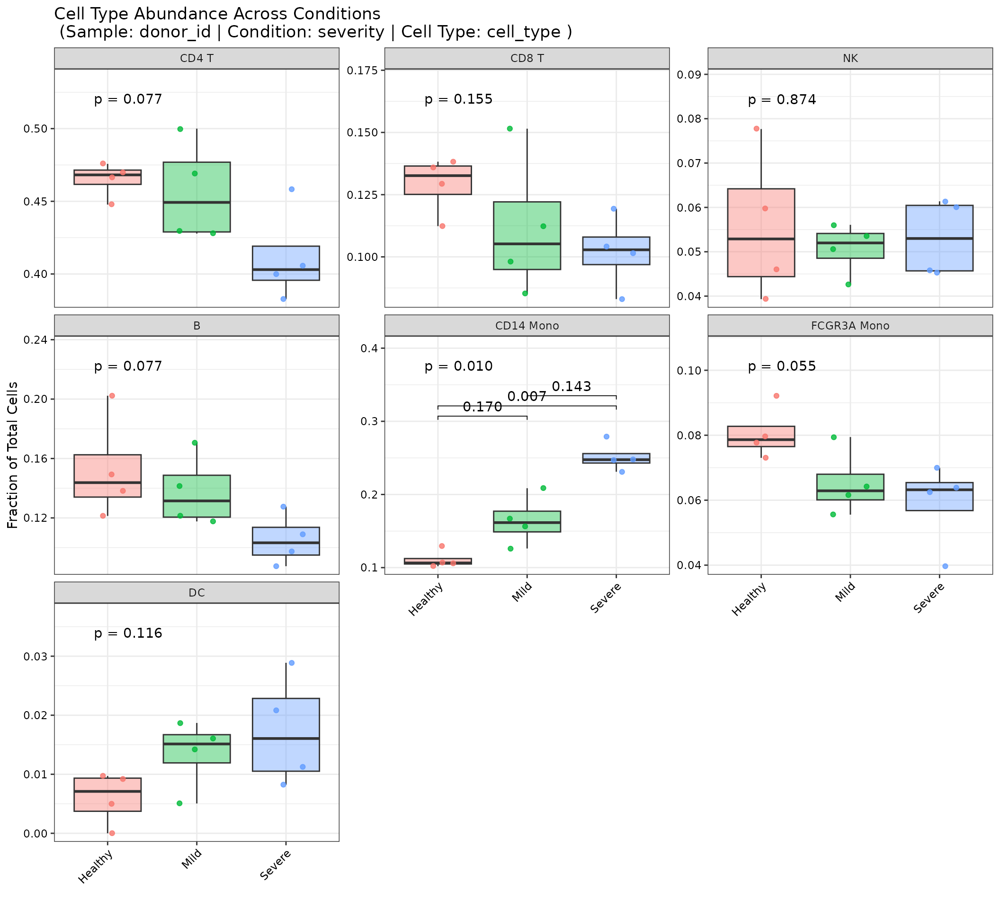
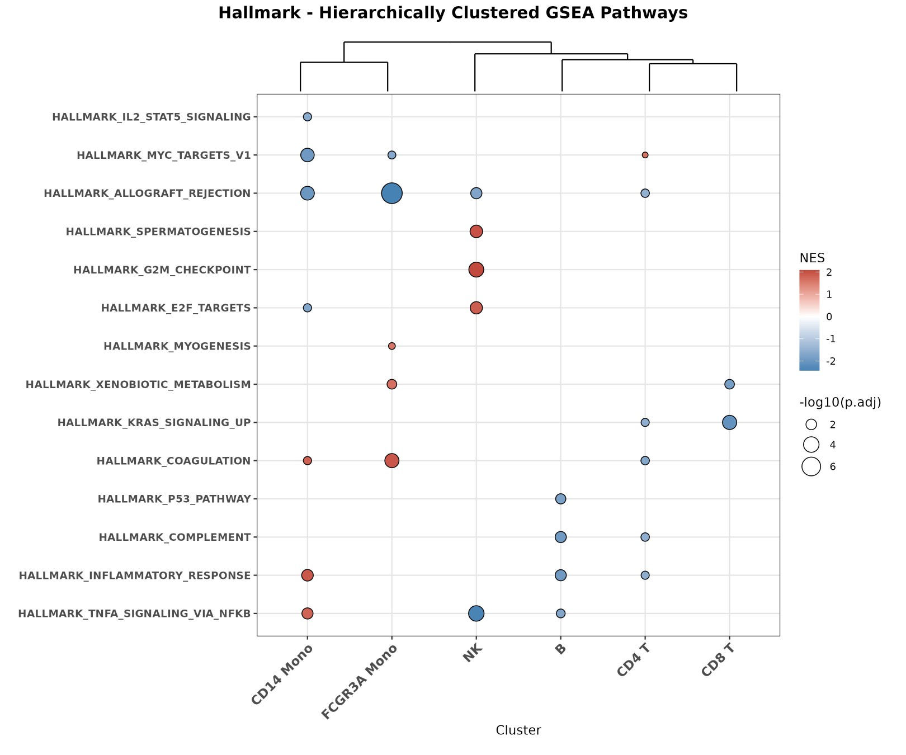

Comprehensive single-cell workflow with OHMmy
Chomchon Uansiri
2026-10-06
Source:vignettes/OHMmy-comprehensive.Rmd
OHMmy-comprehensive.RmdIntroduction
OHMmy provides reproducible wrappers for a complete Seurat v5 scRNA-seq analysis: ambient-RNA removal with SoupX, normalisation and batch integration, diagnostics of technical noise, publication-ready visualisation, donor-aware statistics, and pathway enrichment. Every plotting function saves a timestamped, high-resolution file and returns the underlying ggplot or data, so OHMmy fits both batch scripts on an HPC cluster and interactive analysis.
This article gives a short, runnable tour of the main steps on one dataset. The other articles cover each module in depth:
| Article | Covers |
|---|---|
| Ambient RNA Decontamination with SoupX | Reading Cell Ranger output, estimating and removing ambient RNA |
| Data Processing, Integration, and Clustering | LogNormalize / SCTransform pipelines, integration, resolution sweeps |
| Diagnostic and Variable Evaluation | PC heatmaps and loadings, technical-gene contribution, PC-covariate correlation |
| Advanced Visualization and Marker Analysis | UMAP overlays, density plots, clustered dot plots, blend plots, CD8/NK resolution |
| Statistical Analysis | Confounder checks, differential abundance, compositions, gene-pair correlations |
| Differential Expression and Pathway Enrichment | Markers, GSEA, ORA, pseudo-bulk DESeq2 visualisation |
Function index
| Module | Function | Article |
|---|---|---|
| Ambient RNA (SoupX) | get_sample_names() |
SoupX |
| Ambient RNA (SoupX) | load_counts() |
SoupX |
| Ambient RNA (SoupX) | create_soup_channels() |
SoupX |
| Ambient RNA (SoupX) | create_seurat_for_clustering() |
SoupX |
| Ambient RNA (SoupX) | estimate_contamination() |
SoupX |
| Ambient RNA (SoupX) | create_final_seurat() |
SoupX |
| Ambient RNA (SoupX) | prepare_soupx_inputs() |
SoupX |
| Ambient RNA (SoupX) | run_soupx_post_clustering() |
SoupX |
| Ambient RNA (SoupX) | process_soupx_samples() |
SoupX |
| Ambient RNA (SoupX) | addSoupXMetaToSeurat() |
SoupX |
| Processing | ProcessSeuratLOG() |
Processing |
| Processing | ProcessSeuratSCT() |
Processing |
| Processing | ClusterAndUMAP() |
Processing |
| Processing | CleanSeuratReductions() |
Processing |
| Diagnostics | generate_dimheatmaps() |
Diagnostics |
| Diagnostics | plot_vizdimloadings() |
Diagnostics |
| Diagnostics | plot_technical_contribution() |
Diagnostics |
| Diagnostics | plot_stacked_technical_contribution() |
Diagnostics |
| Diagnostics | plot_pc_metadata_correlation() |
Diagnostics |
| Visualization | make_cluster_palette() |
Advanced visualization |
| Visualization | PlotDimByFactors() |
Advanced visualization |
| Visualization | plot_combined() |
Advanced visualization |
| Visualization | plot_violin_qc_single() |
Advanced visualization |
| Visualization | extract_binned_expression() |
Advanced visualization |
| Visualization | plot_dot_dendro() |
Advanced visualization |
| Visualization | plot_dot_dendro_split() |
Advanced visualization |
| Visualization | plot_dot_dendro_multi() |
Advanced visualization |
| Visualization | plot_blend_nebulosa() |
Advanced visualization |
| Visualization | .blend_feature_plot_v5() |
Advanced visualization |
| Visualization | plot_gene_markers_with_dendro() |
Differential expression |
| Visualization | plot_split_dotplots_by_gene_cluster() |
Differential expression |
| Lineage resolution | score_consensus() |
Advanced visualization |
| Statistics | plot_metadata_stats() |
Statistics |
| Statistics | plot_cell_abundance() |
Statistics |
| Statistics | plot_cluster_distributions() |
Statistics |
| Statistics | plot_gene_pair_correlations() |
Statistics |
| Markers & DE | FindTopMarkersAndHeatmap() |
Differential expression |
| Markers & DE | run_global_gsea() |
Differential expression |
| Markers & DE | run_global_ora() |
Differential expression |
| Markers & DE | generate_volcano_trio() |
Differential expression |
| Markers & DE | get_top_mixed_genes() |
Differential expression |
| Markers & DE | generate_and_save_heatmap() |
Differential expression |
The example dataset
All articles use the 10x Genomics 3k PBMC dataset
(pbmc3k). It is downloaded once and cached. The helper file
ohmmy-vignette-helpers.R also spreads the cells across a
simulated cohort of 12 donors (Healthy, Mild and
Severe, in two sequencing batches), so that the cohort-level functions
can be demonstrated. Monocyte-like cells were deliberately over-assigned
to Mild and Severe donors. The donor, severity, batch, age and sex
columns are synthetic.
1. Load, QC and annotate the cohort
Ambient-RNA removal with SoupX would normally come first. It needs the raw droplet matrices, so it is demonstrated separately in the SoupX article.
pbmc <- CreateSeuratObject(pbmc3k_counts(), project = "pbmc3k", min.cells = 3, min.features = 200)
pbmc[["pct_counts_mt"]] <- PercentageFeatureSet(pbmc, pattern = "^MT-")
pbmc[["percent.ribo"]] <- PercentageFeatureSet(pbmc, pattern = "^RP[SL]")
pbmc <- subset(pbmc, subset = nFeature_RNA > 200 & nFeature_RNA < 2500 & pct_counts_mt < 5)
pbmc <- add_mock_cohort(pbmc)
table(pbmc$severity)
#>
#> Healthy Mild Severe
#> 802 810 10262. Normalise, integrate and cluster
pbmc <- ProcessSeuratLOG(
pbmc,
batch_col = "batch",
vars_to_regress = "pct_counts_mt",
tcr_bcr_patterns = "^TR[ABDG]V|^IG[HKL]V",
reduction_name = "pca.log",
integration_method = "HarmonyIntegration",
integration_reduction = "harmony.log",
verbose = FALSE
)
clus <- ClusterAndUMAP(
pbmc,
sample_name = "pbmc3k",
reduction = "harmony.log",
dims = 1:20,
umap_name = "umap.har",
graph_name = "har_snn",
cluster_prefix = "har_snn_res.",
cluster_resolutions = seq(0.2, 1.2, by = 0.2),
final_resolution = 0.6,
plot_dir = out_dir,
dpi = 100
)
pbmc <- clus$seurat
pbmc$seurat_clusters <- pbmc$har_snn_res.0.6
pbmc <- annotate_pbmc(pbmc, cluster_col = "seurat_clusters")
clus$clustree + DimPlot(pbmc, reduction = "umap.har", group.by = "cell_type",
label = TRUE, repel = TRUE) + NoLegend()
3. Check the principal components for technical noise
plot_technical_contribution(
pbmc, sample_name = "pbmc3k", reduction = "pca.log",
max_pcs = 20, n_top_genes = 200, output_dir = out_dir
)
4. Visualise markers
feature_df <- data.frame(
group = paste0("PBMC_", rep(names(pbmc_marker_sets), lengths(pbmc_marker_sets))),
feature = unlist(pbmc_marker_sets, use.names = FALSE)
)
p_dot <- plot_dot_dendro(pbmc, meta_col = "cell_type", feature_df = feature_df,
prefix = "PBMC", pct_threshold = 10, output_dir = out_dir)
p_dot
blend <- plot_blend_nebulosa(pbmc, cluster_col = "cell_type",
gene_pairs = list(c("CD14", "FCGR3A")),
reduction = "umap.har", width = 24, dpi = 72,
output_dir = out_dir, verbose = FALSE)
blend$plot
5. Test for differences in cell-type abundance
p_abund <- plot_cell_abundance(
pbmc,
sample_col = "donor_id",
condition_col = "severity",
celltype_col = "cell_type",
pairwise_label = "p.adj",
y_expand = 0.35,
output_dir = out_dir
)
p_abund
The test recovers the simulated effect: CD14 monocytes increase with severity.
6. Markers and pathways
Idents(pbmc) <- "cell_type"
mk <- FindTopMarkersAndHeatmap(pbmc, sample_name = "pbmc3k", top_n = 5, onlyPos = FALSE,
output_dir_base = out_dir, height = 10, dpi = 72)
hallmark <- msigdbr::msigdbr(species = "Homo sapiens", collection = "H")[, c("gs_name", "gene_symbol")]
gsea <- run_global_gsea(
GSEA_df = dplyr::mutate(mk$markers, cluster = as.character(cluster)),
m_t2g = hallmark,
output_dir = file.path(out_dir, "gsea"),
title_prefix = "Hallmark"
)
Where to go next
- Clean your raw Cell Ranger output first: see the SoupX article.
- Validate your PC choice before clustering: see the Diagnostics article.
- For donor-aware differential expression, pseudo-bulk DESeq2 and its visualisations are covered in the Differential Expression article.
Session information
sessionInfo()
#> R version 4.6.1 (2026-06-24)
#> Platform: x86_64-pc-linux-gnu
#> Running under: Ubuntu 22.04.5 LTS
#>
#> Matrix products: default
#> BLAS: /usr/lib/x86_64-linux-gnu/openblas-pthread/libblas.so.3
#> LAPACK: /usr/lib/x86_64-linux-gnu/openblas-pthread/libopenblasp-r0.3.20.so; LAPACK version 3.10.0
#>
#> locale:
#> [1] LC_CTYPE=C.UTF-8 LC_NUMERIC=C LC_TIME=C.UTF-8
#> [4] LC_COLLATE=C.UTF-8 LC_MONETARY=C.UTF-8 LC_MESSAGES=C.UTF-8
#> [7] LC_PAPER=C.UTF-8 LC_NAME=C LC_ADDRESS=C
#> [10] LC_TELEPHONE=C LC_MEASUREMENT=C.UTF-8 LC_IDENTIFICATION=C
#>
#> time zone: UTC
#> tzcode source: system (glibc)
#>
#> attached base packages:
#> [1] stats graphics grDevices utils datasets methods base
#>
#> other attached packages:
#> [1] ggraph_2.2.2 patchwork_1.3.2 OHMmy_1.0.2 Seurat_5.6.0
#> [5] SeuratObject_5.4.0 sp_2.2-3
#>
#> loaded via a namespace (and not attached):
#> [1] fs_2.1.0 matrixStats_1.5.0
#> [3] spatstat.sparse_3.2-0 enrichplot_1.32.1
#> [5] httr_1.4.9 RColorBrewer_1.1-3
#> [7] tools_4.6.1 sctransform_0.4.3
#> [9] backports_1.5.1 R6_2.6.1
#> [11] lazyeval_0.2.3 uwot_0.2.5
#> [13] withr_3.0.3 gridExtra_2.3.1
#> [15] progressr_1.0.0 cli_3.6.6
#> [17] Biobase_2.72.0 textshaping_1.0.5
#> [19] Cairo_1.7-0 spatstat.explore_3.8-3
#> [21] fastDummies_1.7.6 scatterpie_0.2.6
#> [23] labeling_0.4.3 sass_0.4.10
#> [25] mvtnorm_1.4-2 S7_0.2.2
#> [27] spatstat.data_3.1-9 ggridges_0.5.7
#> [29] pbapply_1.7-5 pkgdown_2.2.1
#> [31] yulab.utils_0.2.5 systemfonts_1.3.2
#> [33] gson_0.2.1 DOSE_4.6.0
#> [35] R.utils_2.13.0 harmony_2.0.5
#> [37] parallelly_1.48.0 RSQLite_3.53.3
#> [39] gridGraphics_0.5-1 generics_0.1.4
#> [41] ica_1.0-3 spatstat.random_3.5-2
#> [43] car_3.1-5 dplyr_1.2.1
#> [45] GO.db_3.23.1 Matrix_1.7-5
#> [47] ggbeeswarm_0.7.3 S4Vectors_0.50.3
#> [49] abind_1.4-8 R.methodsS3_1.8.2
#> [51] lifecycle_1.0.5 SoupX_1.6.2
#> [53] yaml_2.3.12 carData_3.0-6
#> [55] SummarizedExperiment_1.42.0 qvalue_2.44.0
#> [57] SparseArray_1.12.3 Rtsne_0.17
#> [59] grid_4.6.1 blob_1.3.0
#> [61] promises_1.5.0 crayon_1.5.3
#> [63] ggtangle_0.1.3 miniUI_0.1.2
#> [65] lattice_0.22-9 msigdbr_26.1.1
#> [67] cowplot_1.2.0 KEGGREST_1.52.2
#> [69] pillar_1.11.1 knitr_1.52
#> [71] GenomicRanges_1.64.0 future.apply_1.20.2
#> [73] codetools_0.2-20 glue_1.8.1
#> [75] ggiraph_0.9.6 leidenbase_0.1.37
#> [77] fontLiberation_0.1.0 ggfun_0.2.1
#> [79] spatstat.univar_3.2-0 data.table_1.18.6.1
#> [81] treeio_1.36.1 vctrs_0.7.3
#> [83] png_0.1-9 spam_2.11-4
#> [85] gtable_0.3.6 assertthat_0.2.1
#> [87] cachem_1.1.0 ks_1.15.3
#> [89] xfun_0.61 S4Arrays_1.12.1
#> [91] mime_0.13 tidygraph_1.3.1
#> [93] Seqinfo_1.2.0 pracma_2.4.6
#> [95] survival_3.8-6 aisdk_1.4.12
#> [97] SingleCellExperiment_1.34.0 fitdistrplus_1.2-6
#> [99] ROCR_1.0-12 nlme_3.1-169
#> [101] ggtree_4.2.0 fontquiver_0.2.1
#> [103] bit64_4.8.6 RcppAnnoy_0.0.23
#> [105] bslib_0.12.0 irlba_2.4.1
#> [107] vipor_0.4.7 KernSmooth_2.23-26
#> [109] otel_0.2.0 BiocGenerics_0.58.1
#> [111] DBI_1.3.0 processx_3.9.0
#> [113] ggrastr_1.0.2 tidyselect_1.2.1
#> [115] bit_4.6.0 compiler_4.6.1
#> [117] curl_8.0.0 httr2_1.3.0
#> [119] fontBitstreamVera_0.1.1 desc_1.4.3
#> [121] ggdendro_0.2.0 DelayedArray_0.38.2
#> [123] plotly_4.12.1 checkmate_2.3.4
#> [125] scales_1.4.0 lmtest_0.9-40
#> [127] callr_3.8.0 rappdirs_0.3.4
#> [129] stringr_1.6.0 digest_0.6.39
#> [131] goftest_1.2-3 spatstat.utils_3.2-5
#> [133] rmarkdown_2.32 XVector_0.52.0
#> [135] RhpcBLASctl_0.23-42 htmltools_0.5.9
#> [137] pkgconfig_2.0.3 jpeg_0.1-11
#> [139] MatrixGenerics_1.24.0 fastmap_1.2.0
#> [141] rlang_1.3.0 htmlwidgets_1.6.4
#> [143] shiny_1.14.0 farver_2.1.2
#> [145] jquerylib_0.1.4 zoo_1.9-1
#> [147] jsonlite_2.0.0 BiocParallel_1.46.0
#> [149] mclust_6.1.3 GOSemSim_2.38.3
#> [151] R.oo_1.27.1 magrittr_2.0.5
#> [153] ggplotify_0.1.3 Formula_1.2-6
#> [155] dotCall64_1.2 Rcpp_1.1.2
#> [157] gdtools_0.5.1 ape_5.8-1
#> [159] ggnewscale_0.5.2 viridis_0.6.5
#> [161] reticulate_1.47.0 stringi_1.8.9
#> [163] MASS_7.3-65 plyr_1.8.9
#> [165] parallel_4.6.1 listenv_1.1.0
#> [167] ggrepel_0.9.8 deldir_2.0-4
#> [169] Biostrings_2.80.2 graphlayouts_1.2.5
#> [171] splines_4.6.1 tensor_1.5.1
#> [173] ps_1.9.3 clustree_0.5.1
#> [175] igraph_2.3.4 ggpubr_1.0.0
#> [177] spatstat.geom_3.8-3 enrichit_0.2.5
#> [179] ggsignif_0.6.4 RcppHNSW_0.7.0
#> [181] reshape2_1.4.5 stats4_4.6.1
#> [183] evaluate_1.0.5 Nebulosa_1.22.0
#> [185] tweenr_2.0.3 httpuv_1.6.17
#> [187] RANN_2.6.3 tidyr_1.3.2
#> [189] purrr_1.2.2 polyclip_1.10-7
#> [191] future_1.76.0 scattermore_1.2
#> [193] ggplot2_4.0.3 ggforce_0.5.0
#> [195] broom_1.0.13 xtable_1.8-8
#> [197] tidytree_0.4.8 RSpectra_0.16-2
#> [199] tidydr_0.0.6 rstatix_1.1.0
#> [201] later_1.4.8 viridisLite_0.4.3
#> [203] ragg_1.5.2 tibble_3.3.1
#> [205] aplot_0.3.2 clusterProfiler_4.20.0
#> [207] memoise_2.0.1 beeswarm_0.4.0
#> [209] AnnotationDbi_1.74.0 IRanges_2.46.0
#> [211] cluster_2.1.8.2 globals_0.19.1